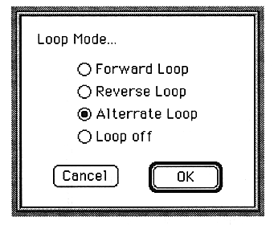

Forward Loop
Play back to normal.
Reverse Loop
Reads waveform data from the reverse and plays it back.
Alternate Loop
Repeatedly reads the loop part in the forward / reverse direction.
Valid only when SCSP is selected in Option. If Macintosh is selected, playback will be a Forward Loop even if Alternate Loop is selected.
Loop off
Does not loop.
OK
Changes the loop mode of SCSP or temporary memory to the specified mode.